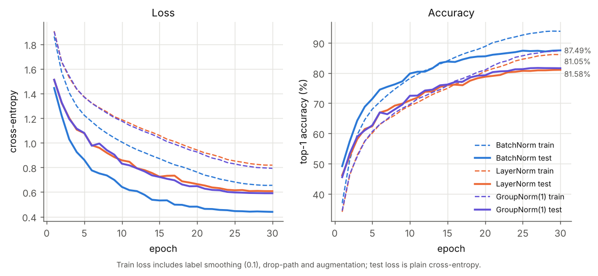

آزمایش ۱ · آموزش اصلی
87.49%
BatchNorm
81.05%
LayerNorm2d
81.58%
GroupNorm(1)
دقت آموزش LN هم پایینتر است (86.1% در برابر 93.8%)؛ پس فاصله از نوع کمبرازش است، نه بیشبرازش.

MobileNetV4 UIB · CIFAR-10